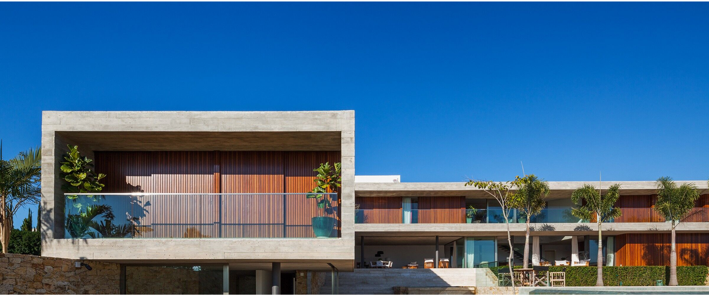

ARQUITETURA QUE INSPIRA
Fundado em 2008 pelo arquiteto Adriano Mascarenhas, o escritório Sotero Arquitetos atua a partir de Salvador com projetos que cruzam escalas, usos e territórios. Com obras construídas em diversos estados brasileiros, o portfólio inclui interiores, edificações e intervenções urbanas marcadas por leveza, rigor técnico e clareza formal.
A equipe, sediada às margens da Baía de Todos os Santos, combina diferentes gerações em uma prática colaborativa, investigativa e sensível aos temas da cultura urbana contemporânea. Cada projeto é visto como um campo de pesquisa, onde novas tecnologias, materiais e linguagens são explorados com precisão e inventividade.
Premiado nacionalmente e com trabalhos publicados no Brasil e no exterior, o escritório segue comprometido com uma arquitetura essencial, aberta ao contexto e alinhada ao seu tempo.